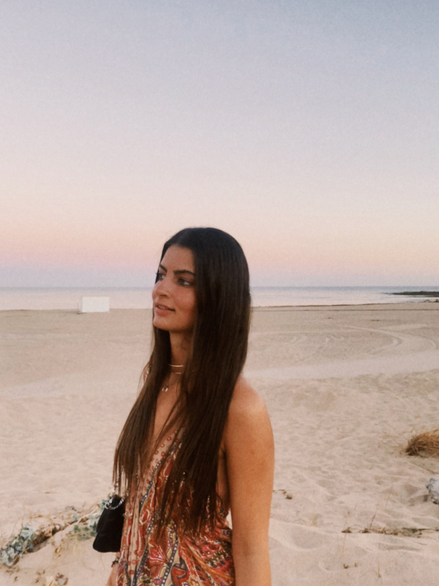

ÍNDICE
Descripción Personal Estudios realizados Gustos y aficiones Experiencia LaboralUn poco sobre mí

Descripción personal
Leire Hermoso estudiante de Comunicación + Tecnologías para la Comunicación Audiovisual y Multimedia
Estudios realizados
- ESO Colegio Sagrado Corazón Mundaiz
- Bachillerato en Jesuitak Donostia
Gustos y aficiones
Una de mis mayores aficiones es el deporte, en concreto la gimnasia rítmica. Empecé en el mundo de la gimansia rítmica a las 5 años, en el colegio. Poco a poco, me fui dedicando más a esta disciplina hasta que acabe compientiendo a nivel necional hasta los 18 años. Por otro lado, desde pequeña he estado involucrada en el mundo del tenis, ya que una gran parte de mi familia se ha dedicado al tenis de manera profesional.
Experiencia laboral
Trabajo como prefesora particular de Educación Primaria, dando clases a un niños de 8 años. Por otro lado, también trabajo cono azafata de eventos, concretamente en congresos, diferentes eventos de hospitality relacionados con el turismo, Festival de Cine de San Sebastián y en diferentes partidos de la Real Sociedad en Anoeta.